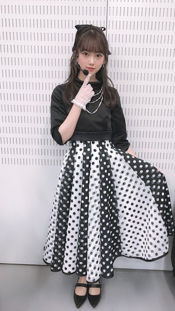
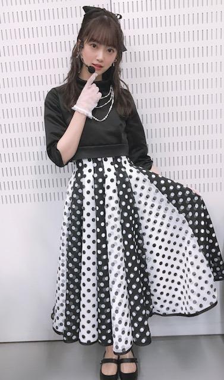

2019/0202Satオードリーヘップバーン
昨日のmステ3時間sp
観てくださった皆さん
ありがとうございました✨
ファンの方や友達、いろんな人が
観ててくれて嬉しかったなぁ
髪型はギリギリまで悩んで、
最初はハーフアップにしてたけど
本番前にポニーテールに変えました！
今回の衣装テーマは
オードリーヘップバーン☺︎
髪型変える前の幻のハーフアップを。



いつかまたこの髪型もやりますね！
横浜で開催されていたオードリーヘップバーン展には行けなかったけどお顔はもちろんファッションやメイク、佇まいも絵になる素敵な女性で画像や映像では拝見していたので嬉しかった〜
私的にヘップバーンを意識したポイントは
キリッとした太めの眉毛
口紅はうるつや赤リップ
前髪は眉毛合わせでまっすぐめにおろす
下まつげにもマスカラ
です！
女性らしくもあるけど
力強さもありドーリー感を出せるように
工夫してみました✨✨
しかし、外寒かったなぁ。笑
でも良き思い出でした！
ライブみたいで楽しかった！
明日は握手会☺︎
皆さんのおすすめの映画、アーティストの曲
教えてくださ〜い
あと、私の好きなところも♡笑
待ってますよ？o(^-^)o笑

では！
インフルエンザ流行ってるので
手洗いうがいマスクは必須です
風邪予防して元気に2月も乗り切りましょう〜
私も気をつける〜
あ！！
握手会で見たい服と髪型教えて^ ^
2019/02/02 15:54
コメント(482)
ボブの未央奈また観たい！
未央奈元気か？
随分可愛いくなったな？ 笑笑
随分可愛いくなったな？ 笑笑
Mステお疲れ様！！
幻のハーフアップも可愛いけどショートも初期の頃のロングも可愛くて好き！♡
自分のオススメというか好きな映画は人を選びますがスプラッター映画が好きなのでSAWとグロテスクとマーターズとムカデ人間と人狼ゲームかな
でもジブリや恋愛映画も好きだよ
未央奈の好きなとこは1つ目は白くて綺麗な肌で
目元と口が未央奈の顔のパーツで一番好きですね
そして何より笑顔が好きです
変顔からの笑顔は反則級に可愛いなって
華奢なとこも足がスラッとしてるとこも
2つ目はそして番組で垣間見えるちょっとした優しさや気遣いだったり打たれ強いとことアイドルとして頑張っているとこです
7枚目シングル「バレッタ」で当時番組見学中にも関わらず1期生を応援してる人達が多い中センター努めたとことか乃木どこや工事中で2期生を掘り下げる時のめちゃくちゃなとこ笑
3つ目は美味しそうに食べるとこ
乃木どこや乃木中で食べてるシーンの時本当に美味しそうに食べてていいなって
自分はここ数年体調不良になった事が一度も無いですが
未央奈もインフル流行ってる時こそお気をつけて元気に2月乗り切ろう〜
幻のハーフアップも可愛いけどショートも初期の頃のロングも可愛くて好き！♡
自分のオススメというか好きな映画は人を選びますがスプラッター映画が好きなのでSAWとグロテスクとマーターズとムカデ人間と人狼ゲームかな
でもジブリや恋愛映画も好きだよ
未央奈の好きなとこは1つ目は白くて綺麗な肌で
目元と口が未央奈の顔のパーツで一番好きですね
そして何より笑顔が好きです
変顔からの笑顔は反則級に可愛いなって
華奢なとこも足がスラッとしてるとこも
2つ目はそして番組で垣間見えるちょっとした優しさや気遣いだったり打たれ強いとことアイドルとして頑張っているとこです
7枚目シングル「バレッタ」で当時番組見学中にも関わらず1期生を応援してる人達が多い中センター努めたとことか乃木どこや工事中で2期生を掘り下げる時のめちゃくちゃなとこ笑
3つ目は美味しそうに食べるとこ
乃木どこや乃木中で食べてるシーンの時本当に美味しそうに食べてていいなって
自分はここ数年体調不良になった事が一度も無いですが
未央奈もインフル流行ってる時こそお気をつけて元気に2月乗り切ろう〜
未央奈さん、やはり体調は回復していなかったのですね。
ホームページで、3部から欠席されたことを知りました。
本当は、2部も、辛い症状を我慢してファンの対応をされたのですね。
そこまで責任感を全うしようとされた未央奈さんに対して、申し訳ない気持ちで一杯です。
3部から欠席を決断されたときの無念さが、私のようなものでも十分理解出来ます。
やはり、最初からまる1日、欠席しとけば良かったと考える方もいると思います。
でも、私は、未央奈さんが、客観的には相当な判断とは言えなくても、ファンのために2部の出席を決断してくれたことを支持したいです。
確かに、結果として未央奈さんの体調が回復せず欠席されたことは事実です。
同時に、未央奈さんが、これほどファンのことを考えてくれたことも、また、事実なのです。
未央奈さんには、1日も早く体調を回復していただきたいです。
そして、次の握手会には元気に出席していただき
今日の分も含めて、ファンの皆さんと楽しい時間を共有していただきたいです。
私は、今日、未央奈さんが、敢えて2部への参加を決断してくれたことを、決して忘れません。
ホームページで、3部から欠席されたことを知りました。
本当は、2部も、辛い症状を我慢してファンの対応をされたのですね。
そこまで責任感を全うしようとされた未央奈さんに対して、申し訳ない気持ちで一杯です。
3部から欠席を決断されたときの無念さが、私のようなものでも十分理解出来ます。
やはり、最初からまる1日、欠席しとけば良かったと考える方もいると思います。
でも、私は、未央奈さんが、客観的には相当な判断とは言えなくても、ファンのために2部の出席を決断してくれたことを支持したいです。
確かに、結果として未央奈さんの体調が回復せず欠席されたことは事実です。
同時に、未央奈さんが、これほどファンのことを考えてくれたことも、また、事実なのです。
未央奈さんには、1日も早く体調を回復していただきたいです。
そして、次の握手会には元気に出席していただき
今日の分も含めて、ファンの皆さんと楽しい時間を共有していただきたいです。
私は、今日、未央奈さんが、敢えて2部への参加を決断してくれたことを、決して忘れません。
こんばんはお疲れさま。
大丈夫かい？
体調良くないみたいやん。
堀ちゃんもファンの皆も残念やろうけど、休むのも勇気やよ。
しっかりゆっくり焦らんと治しよ。
誰だって良いときもあればそうやない時もある。
気にしんとゆっくりな。
元気なったらまた更新してください。
ではではまたね。
ほなね、堀ちゃん。
大丈夫かい？
体調良くないみたいやん。
堀ちゃんもファンの皆も残念やろうけど、休むのも勇気やよ。
しっかりゆっくり焦らんと治しよ。
誰だって良いときもあればそうやない時もある。
気にしんとゆっくりな。
元気なったらまた更新してください。
ではではまたね。
ほなね、堀ちゃん。
体調大丈夫かな？まずはゆっくり暖かくして休んでね！
個握、そもそも行けなかったから未央奈ちゃんの好きなところブログのコメントに残します。
僕が思う未央奈ちゃんの好きなところは、ファンに対しての思いやりがすごい所です。自分の体調が優れないのに頑張って握手会参加しようとしてくれるその姿勢がほんとに嬉しいです。ただ、僕らは未央奈ちゃんに会えるのもすっごく嬉しいんだけど、未央奈ちゃんが体調万全で楽しくお仕事してくれることが1番嬉しいんじゃないかなと思います。
個握は振替がある分、後で未央奈ちゃんが大変になっちゃうかもしれないけど辛い時はゆっくり休んで欲しいです！
いつも頑張ってくれてありがとう。これからも応援し続けます！
個握、そもそも行けなかったから未央奈ちゃんの好きなところブログのコメントに残します。
僕が思う未央奈ちゃんの好きなところは、ファンに対しての思いやりがすごい所です。自分の体調が優れないのに頑張って握手会参加しようとしてくれるその姿勢がほんとに嬉しいです。ただ、僕らは未央奈ちゃんに会えるのもすっごく嬉しいんだけど、未央奈ちゃんが体調万全で楽しくお仕事してくれることが1番嬉しいんじゃないかなと思います。
個握は振替がある分、後で未央奈ちゃんが大変になっちゃうかもしれないけど辛い時はゆっくり休んで欲しいです！
いつも頑張ってくれてありがとう。これからも応援し続けます！
未央奈可愛い
髪型はハーフアップがいいです！
服装は白いワンピースがいいです！
結局なんでも似合うと思うんですけどねーw
髪型はハーフアップがいいです！
服装は白いワンピースがいいです！
結局なんでも似合うと思うんですけどねーw
未央奈、体調は大丈夫ですか今日の握手会楽しみにしていたけど、未央奈がまた元気な姿で戻って来られることを祈ってます。振替にはなったけど未央奈会えるのを心待ちにしてます。お大事に。
未央ちゃん大丈夫?今、乃木坂ニュース見たら、本日の握手会の３部から５部体調不良のため休みだったって聞いたよ‼️１部、２部体調悪いのに、来てくださったファンの方のために無理したんだね。でも、よく頑張ったね。でも、元々未央ちゃんはあまり体丈夫じゃないので凄く心配です。今は仕事の事は、忘れてゆっくり休んで栄養のある食べ物を沢山食べて元気になってね。残念だけど、今度のレコメンも無理しないで休んでいいからね。また、いつもの皆の大好きな未央ちゃんの笑顔とパフォーマンス、演技見せてね。fighting
初めて堀ちゃんの個握(2部と4部)に本日参加しました。
まず2部でお会いした時に表情に疲れが見られたので心配でした。
3部以降体調不良で欠席との事で、また会うことは出来ませんでしたが、無理はしてほしくないし、体調回復優先でゆっくり休んでほしいと思いました。
また次の個握に参加した時にはオススメの映画の話でも出来ればと思うので、今はゆっくりと休んでください。
まず2部でお会いした時に表情に疲れが見られたので心配でした。
3部以降体調不良で欠席との事で、また会うことは出来ませんでしたが、無理はしてほしくないし、体調回復優先でゆっくり休んでほしいと思いました。
また次の個握に参加した時にはオススメの映画の話でも出来ればと思うので、今はゆっくりと休んでください。
堀ちゃん、体調いかがでしょうか？
あまり心配ばかりされるのも嬉しくはないかもしれませんが、やっぱりめちゃめちゃ心配です( ´ 〜 ` )
台北ライブでお疲れなうえに、台北との気温差もあって、さらに毎日忙しいんですから、体調を崩してしまうのは無理はないです…！
どうか自分を甘やかして、ゆ〜っくり休んでください( ´ ▽ ` )
また梅干しも食べてくださいね、レンジとかで温めるとなお良いらしいです(o^^o)
あと、カカオが多い苦めのチョコも風邪予防にはいいみたいです、苦手じゃなければぜひお試しください( ´ ▽ ` )
さてさて、私ごとですが、ここ数日バタバタしててリアルタイムではMステ見れなかったんですが、録画でしっかり見させていただきました(o^^o)
寒そうに美彩先輩と擦り寄い合ってる堀ちゃん、めちゃめちゃ可愛かったです！
でも、めちゃめちゃ寒かったですよね…本当にお疲れ様です…！
髪型も、ポニーテールの堀ちゃん大好きなので勝手に嬉しくなってました( ´ ▽ ` )笑
スカートの動きとポニーテールの動きが同調してるところがあって、めっちゃ綺麗でした〜(o^^o)
シンクロニシティでは、堀ちゃんのダイナミックなダンスが見られるのも楽しみの一つです！
最近特に堀ちゃんのダンスに心惹かれてます、明るく元気な雰囲気、しっとりした雰囲気、切ない雰囲気、全て魅力的すぎます( ´ ▽ ` )♩
でも、ハーフアップもめちゃめちゃ可愛いですね…！ポニーテール堀ちゃんに匹敵する可愛さ…！
この髪型やりますねの一言が、なんだかとても嬉しいです、ずーっと楽しみにできます(o^^o)♩
また色んな堀ちゃんが見られるのを、心から楽しみにしています！！
ではでは、何度も言ってしまいますが、ゆっくり休んでくださいー！
寝られなかったらゴロゴロするだけでも、なんとなく寝たくなかったら映画見たり音楽聴いたり、とにかく堀ちゃんの好きなことをして、ゆったり過ごしてください！
少しでも早く堀ちゃんが元気になりますように！
あまり心配ばかりされるのも嬉しくはないかもしれませんが、やっぱりめちゃめちゃ心配です( ´ 〜 ` )
台北ライブでお疲れなうえに、台北との気温差もあって、さらに毎日忙しいんですから、体調を崩してしまうのは無理はないです…！
どうか自分を甘やかして、ゆ〜っくり休んでください( ´ ▽ ` )
また梅干しも食べてくださいね、レンジとかで温めるとなお良いらしいです(o^^o)
あと、カカオが多い苦めのチョコも風邪予防にはいいみたいです、苦手じゃなければぜひお試しください( ´ ▽ ` )
さてさて、私ごとですが、ここ数日バタバタしててリアルタイムではMステ見れなかったんですが、録画でしっかり見させていただきました(o^^o)
寒そうに美彩先輩と擦り寄い合ってる堀ちゃん、めちゃめちゃ可愛かったです！
でも、めちゃめちゃ寒かったですよね…本当にお疲れ様です…！
髪型も、ポニーテールの堀ちゃん大好きなので勝手に嬉しくなってました( ´ ▽ ` )笑
スカートの動きとポニーテールの動きが同調してるところがあって、めっちゃ綺麗でした〜(o^^o)
シンクロニシティでは、堀ちゃんのダイナミックなダンスが見られるのも楽しみの一つです！
最近特に堀ちゃんのダンスに心惹かれてます、明るく元気な雰囲気、しっとりした雰囲気、切ない雰囲気、全て魅力的すぎます( ´ ▽ ` )♩
でも、ハーフアップもめちゃめちゃ可愛いですね…！ポニーテール堀ちゃんに匹敵する可愛さ…！
この髪型やりますねの一言が、なんだかとても嬉しいです、ずーっと楽しみにできます(o^^o)♩
また色んな堀ちゃんが見られるのを、心から楽しみにしています！！
ではでは、何度も言ってしまいますが、ゆっくり休んでくださいー！
寝られなかったらゴロゴロするだけでも、なんとなく寝たくなかったら映画見たり音楽聴いたり、とにかく堀ちゃんの好きなことをして、ゆったり過ごしてください！
少しでも早く堀ちゃんが元気になりますように！
こんばんは！
未央奈、体調大丈夫？
無理はせずにちゃんと休んで、体調を整えてね
衣装テーマ、オードリーヘップバーンいいね～
全身可愛い
未央奈の好きなところは、可愛くて明るく面白いところと、いい感じのマイペースかな
ちなみにオフショルでハーフツインが、最近のお気に入り
またねっ！
未央奈、体調大丈夫？
無理はせずにちゃんと休んで、体調を整えてね
衣装テーマ、オードリーヘップバーンいいね～
全身可愛い
未央奈の好きなところは、可愛くて明るく面白いところと、いい感じのマイペースかな
ちなみにオフショルでハーフツインが、最近のお気に入り
またねっ！
可愛良いです！
こんばんは！
未央奈大丈夫？
握手会行けなかったのでブログやニュースで知りましたが本日の握手会1部だけじゃなく3〜5部も欠席すると聞いて未央奈の体調とメンタルが心配
ファンとしては残念だと思うけど無理して体調やメンタルを壊したり肌が良くない状態になったりする方が悲しいので無理せず十分な休養取ってまた元気で笑顔の可愛い未央奈の顔がみたいな
未央奈大丈夫？
握手会行けなかったのでブログやニュースで知りましたが本日の握手会1部だけじゃなく3〜5部も欠席すると聞いて未央奈の体調とメンタルが心配
ファンとしては残念だと思うけど無理して体調やメンタルを壊したり肌が良くない状態になったりする方が悲しいので無理せず十分な休養取ってまた元気で笑顔の可愛い未央奈の顔がみたいな
ホーリー体調大丈夫ですか？
疲れからのMステ寒かったよね
お身体ご自愛ください
good-byeひろしより
疲れからのMステ寒かったよね
お身体ご自愛ください
good-byeひろしより
Mステ見たよ！
めっちゃ可愛かった！
風邪引かないように体調には
きおつけてね！
めっちゃ可愛かった！
風邪引かないように体調には
きおつけてね！
Mステお疲れ様でした♡
衣装と髪型とっても似合ってる♡かわいい
体調大丈夫ですか？お大事にしてくださいね
衣装と髪型とっても似合ってる♡かわいい
体調大丈夫ですか？お大事にしてくださいね
堀ちゃん
今日の握手会お疲れ様でした
2部だけでも出られたようで良かったですが無理はなさならないように気をつけて下さい（無理のない程度で）
堀ちゃんはアイドルである前に1人の人間なので体を大切にして下さい
今日は行ってないけど、また元気な姿で次の握手会で会えるのを楽しみにしてます
1ブログ1コメントがマイルールですが緊急事態だったので2回目のコメントを心配になって急遽させて頂きました
しっかり休んでね
ありがとうございました
今日の握手会お疲れ様でした
2部だけでも出られたようで良かったですが無理はなさならないように気をつけて下さい（無理のない程度で）
堀ちゃんはアイドルである前に1人の人間なので体を大切にして下さい
今日は行ってないけど、また元気な姿で次の握手会で会えるのを楽しみにしてます
1ブログ1コメントがマイルールですが緊急事態だったので2回目のコメントを心配になって急遽させて頂きました
しっかり休んでね
ありがとうございました
全員合わせて初！の！コメント！！はみおなになりました！！！
受験で乃木坂我慢してた間にみおなの可愛さが50倍くらいになってびびってる、、！いつか会いに行きたいです〜！！！
受験で乃木坂我慢してた間にみおなの可愛さが50倍くらいになってびびってる、、！いつか会いに行きたいです〜！！！
みおちゃん！握手会お疲れ様！本当に体調大丈夫？！無理すると余計心配だよ！！早く寝なよ！！今日握手会行けなかったけど、みおちゃんのいいところとかいっぱい伝えたかった、、たぶん握手会いっても良いところいっぱいいっぱいありすぎるから伝えきれない！だから今から言うね！
みおちゃんは田舎から都会に出てきて、素朴さとか透明感を一番持ってる子だと思う！ジブリの話してるところとか、ものまねしてるところとか、ほんとに可愛いなって思う（笑）あと、自分が高校になじめなくて、昼とか弁当食べながらみんなの輪に入れずに一人でみおちゃんの755見てる時もあったし、その時にみおちゃんの言葉になんども励まされてた！自分がちょうど同じようなことで悩んでた人にみおちゃんが返信してる言葉を見て、優しいんだなって思って感動して泣いてた（笑）写真集も読んだ時に、嫌なことがあっても表に出さないようにしてるって知って、こんな素敵な人好きになってよかったなってほんとに思った！
あと、私はみおちゃんのショートもロングも茶髪も黒髪も好きだし、どんな服装とかメイクしててもやっぱり可愛いなって思う！自分もそうなりたいなって憧れはあるけど、それよりもそばにいて支えてあげたい気持ちのが強いかな！
それから、私親の実家が岐阜で、たまに行くんだけど、空気が綺麗だし、食べ物も美味しいし、人もあったかいしいいなって思う！長良川とかリス村とかアウトレットとか行ったよん！みおちゃんが岐阜の観光大使になったらめっちゃ行くと思う（笑）まだいいところいっぱいあるけど、書ききれんかった（笑）めちゃめちゃすいとーよ！！
ももんが
みおちゃんは田舎から都会に出てきて、素朴さとか透明感を一番持ってる子だと思う！ジブリの話してるところとか、ものまねしてるところとか、ほんとに可愛いなって思う（笑）あと、自分が高校になじめなくて、昼とか弁当食べながらみんなの輪に入れずに一人でみおちゃんの755見てる時もあったし、その時にみおちゃんの言葉になんども励まされてた！自分がちょうど同じようなことで悩んでた人にみおちゃんが返信してる言葉を見て、優しいんだなって思って感動して泣いてた（笑）写真集も読んだ時に、嫌なことがあっても表に出さないようにしてるって知って、こんな素敵な人好きになってよかったなってほんとに思った！
あと、私はみおちゃんのショートもロングも茶髪も黒髪も好きだし、どんな服装とかメイクしててもやっぱり可愛いなって思う！自分もそうなりたいなって憧れはあるけど、それよりもそばにいて支えてあげたい気持ちのが強いかな！
それから、私親の実家が岐阜で、たまに行くんだけど、空気が綺麗だし、食べ物も美味しいし、人もあったかいしいいなって思う！長良川とかリス村とかアウトレットとか行ったよん！みおちゃんが岐阜の観光大使になったらめっちゃ行くと思う（笑）まだいいところいっぱいあるけど、書ききれんかった（笑）めちゃめちゃすいとーよ！！
ももんが
Мステ、堀さんが一番カッコよかったです。堀さんは表現者ですね、本物のスターの中のスターです。映画の評論も素晴らしかったです。堀さんは、優しい人ですね、やさしい人が強いと斎藤一人さんの本に書いてありました。自分の好きなことから、楽しく学んでる堀さんは凄いですし、さらに堀さんが、凄いなと思うのは、コツコツがんばるのでも、堀さんのコツコツは、同じことを地道に繰り返すのではなく、上にあがる努力をされてるので、コツコツのコツで頭ひとつ抜けちゃう。コツだけでも抜け出るのに、コツコツがんばってる堀さんは人より二段もあがってますね、それは、堀さんが、ただ、がんばるだけでなく、楽しく、がんばってるからだと思います。つらくても最後には堀さんが必ずかちますよ、
今日は体調が悪いのに2部出てくれてありがとう！
直接未央奈の好きなところ言えてよかったよ〜無理しないでお大事にね！！
直接未央奈の好きなところ言えてよかったよ〜無理しないでお大事にね！！
まずは握手会お疲れ様です！
今日の個握は自分にとって初めての個握でした。北海道から来たので少しだけでも堀ちゃんに会えてとても嬉しかったです。
ただそれと同時に心配の気持ちの方が勝ってしまって何とも言えない気持ちになったので先ずはゆっくり休んでください！
健康第一！堀ちゃん頑張りすぎないでね。
今日の個握は自分にとって初めての個握でした。北海道から来たので少しだけでも堀ちゃんに会えてとても嬉しかったです。
ただそれと同時に心配の気持ちの方が勝ってしまって何とも言えない気持ちになったので先ずはゆっくり休んでください！
健康第一！堀ちゃん頑張りすぎないでね。
Mステお疲れ様ー
ポニーテールやっぱり可愛いなー
インフルエンザにはなりたくないけどインフルエンサー中毒にはかかったよw
今月も頑張ってね
ポニーテールやっぱり可愛いなー
インフルエンザにはなりたくないけどインフルエンサー中毒にはかかったよw
今月も頑張ってね
こんばんは。
握手会お疲れ様。
体調は大丈夫？ゆっくり休んでね。
mステ観たよ！
オードリーイメージの衣装、シンクロニシティのダンスと良く合っててすごく綺麗だった！
まだまだ寒い日が続くので、暖かくしておやすみなさい。。
握手会お疲れ様。
体調は大丈夫？ゆっくり休んでね。
mステ観たよ！
オードリーイメージの衣装、シンクロニシティのダンスと良く合っててすごく綺麗だった！
まだまだ寒い日が続くので、暖かくしておやすみなさい。。
堀さん、こんばんは。
季節とか疲れが溜まってたとか色々あったんだと思います。
残念な気持ちも有るとは思いますけど、バースデーライブで元気な姿を見せれるように体調整えるいい機会になったと思って、しっかり休んでくださいね。
堀さんが元気になったらいいとか幸せになったらいいって僕が願うことは、僕が自分にも幸せがあるって信じることに繋がるのかな、なんてシンクロニシティの歌詞みたいなことを考えてしまいました。堀さんのおかげで明日も頑張れそうです。いつもありがとうございます。いつも応援してます。
季節とか疲れが溜まってたとか色々あったんだと思います。
残念な気持ちも有るとは思いますけど、バースデーライブで元気な姿を見せれるように体調整えるいい機会になったと思って、しっかり休んでくださいね。
堀さんが元気になったらいいとか幸せになったらいいって僕が願うことは、僕が自分にも幸せがあるって信じることに繋がるのかな、なんてシンクロニシティの歌詞みたいなことを考えてしまいました。堀さんのおかげで明日も頑張れそうです。いつもありがとうございます。いつも応援してます。
未央奈～こんばんは！
ぽてとです！
Mステ見たよ♪
可愛かった！
未央奈のポニテ好きやわ♪ヽ(´▽｀)/
ぽてとです！
Mステ見たよ♪
可愛かった！
未央奈のポニテ好きやわ♪ヽ(´▽｀)/
こんばんはー！
体調大丈夫？心配です。
遅くなりましたが、mステお疲れ様！
シンクロニシティは個人的にはライブで観たい曲ランキング上位！
ダンスの美しさとか表情とかの表現が素晴らしすぎて何回観ても感動しちゃう。笑
え！本番前にポニーテールに変えたんだ。
オードリーヘップバーン☺︎
幻のハーフアップ♪
かわいい。。おしゃれ美人さん。。
本番と本番前とで２つの髪型がみれるなんてなんだか得したきぶーん。
うん。待ってる！
オードリーヘップバーン展、横浜で開催されてたんだね、、
うんうん！ティファニーで朝食を のイメージがあるから力強さと優雅さがシンクロニシティとシンクロしてたのかも。ん？シンクロニシティとシンクロ？むむむ？？
そうだよねー！相当寒い日だったはずだよ。笑
良き思い出。
バスラ楽しみ。(ライブと聞くとすーぐ言う。笑
16日の握手会行くよ！！1枚だけども。笑
今日券なかったんだけど伝えたいから今日の分のエアー握手会していいですか？笑
(握手)
おすすめの映画はインターステラーです！宇宙ってすげぇ。って
(お時間でーす。)
ゾクゾクするSF映画！火星に取り残されちゃうほうじゃないやつ！観てね！
(握手)
おすすめの曲はsumikaさんのファンファーレとソーダ！
(お時間でーす。)
歌詞が感情的だから想いに浸れるところ？がいい。
(握手)
未央奈の好きなところ？
(お時間でーす。)
歌ってるときの笑顔、食べてるときの満面の笑み、かわいすぎる変顔、めげない精神力、ヘアアレンジが好きなとこ、髪を結んでも結ばなくてもデコ出しもかわいいとこ、映画レビューがうまいとこ、ペレー帽被ると謎に有名な画家感が出るとこ、ブログモバメ755を大切にしてくれてるとこ、ファッションセンスがいいところ、お寿司食べたいと言いつつ食べたかどうかわからないところ、元気がないときにモバメでファンを頼ってくれるとこ、ぎふ。ザンビで学級委員感がちゃんと出てるとこ、(光のような早口)
ふぅ。要するに大好きです。
(書いてる途中で恥ずかしくなったのは内緒。
では！しっかり風邪治して元気に会いましょう〜！！✌️
え！！見たい服と髪型？
また長くなるよ？笑 冗談です。
未央奈がなりたいアクション女優っぽい服と髪型がみたい！✨
あとは、お団子未央奈にいつか会いたい。笑
さて、なんだかテンション高めのコメントで明日の朝見たら自分でドン引きしそうだけど、暇なときにでも読んで。笑
おやすみおな〜(^-^)
体調大丈夫？心配です。
遅くなりましたが、mステお疲れ様！
シンクロニシティは個人的にはライブで観たい曲ランキング上位！
ダンスの美しさとか表情とかの表現が素晴らしすぎて何回観ても感動しちゃう。笑
え！本番前にポニーテールに変えたんだ。
オードリーヘップバーン☺︎
幻のハーフアップ♪
かわいい。。おしゃれ美人さん。。
本番と本番前とで２つの髪型がみれるなんてなんだか得したきぶーん。
うん。待ってる！
オードリーヘップバーン展、横浜で開催されてたんだね、、
うんうん！ティファニーで朝食を のイメージがあるから力強さと優雅さがシンクロニシティとシンクロしてたのかも。ん？シンクロニシティとシンクロ？むむむ？？
そうだよねー！相当寒い日だったはずだよ。笑
良き思い出。
バスラ楽しみ。(ライブと聞くとすーぐ言う。笑
16日の握手会行くよ！！1枚だけども。笑
今日券なかったんだけど伝えたいから今日の分のエアー握手会していいですか？笑
(握手)
おすすめの映画はインターステラーです！宇宙ってすげぇ。って
(お時間でーす。)
ゾクゾクするSF映画！火星に取り残されちゃうほうじゃないやつ！観てね！
(握手)
おすすめの曲はsumikaさんのファンファーレとソーダ！
(お時間でーす。)
歌詞が感情的だから想いに浸れるところ？がいい。
(握手)
未央奈の好きなところ？
(お時間でーす。)
歌ってるときの笑顔、食べてるときの満面の笑み、かわいすぎる変顔、めげない精神力、ヘアアレンジが好きなとこ、髪を結んでも結ばなくてもデコ出しもかわいいとこ、映画レビューがうまいとこ、ペレー帽被ると謎に有名な画家感が出るとこ、ブログモバメ755を大切にしてくれてるとこ、ファッションセンスがいいところ、お寿司食べたいと言いつつ食べたかどうかわからないところ、元気がないときにモバメでファンを頼ってくれるとこ、ぎふ。ザンビで学級委員感がちゃんと出てるとこ、(光のような早口)
ふぅ。要するに大好きです。
(書いてる途中で恥ずかしくなったのは内緒。
では！しっかり風邪治して元気に会いましょう〜！！✌️
え！！見たい服と髪型？
また長くなるよ？笑 冗談です。
未央奈がなりたいアクション女優っぽい服と髪型がみたい！✨
あとは、お団子未央奈にいつか会いたい。笑
さて、なんだかテンション高めのコメントで明日の朝見たら自分でドン引きしそうだけど、暇なときにでも読んで。笑
おやすみおな〜(^-^)
未央奈ちゃん、おはよう。
Music stationの衣裳は未央奈ちゃんのイメージにぴったりでとても素敵です。とっても可愛い‼
ゆっくり休養して、しっかり治してくださいね。未央奈ちゃんが元気になるのを待ってま～す。お大事に。
Birthday liveには何とか一日目だけ行けることになったから、是非とも未央奈ちゃんとアイコンタクトしたいです。お願いします。
乃木坂46と頑張ってるcuteでsmartな未央奈ちゃんを応援しています。
Music stationの衣裳は未央奈ちゃんのイメージにぴったりでとても素敵です。とっても可愛い‼
ゆっくり休養して、しっかり治してくださいね。未央奈ちゃんが元気になるのを待ってま～す。お大事に。
Birthday liveには何とか一日目だけ行けることになったから、是非とも未央奈ちゃんとアイコンタクトしたいです。お願いします。
乃木坂46と頑張ってるcuteでsmartな未央奈ちゃんを応援しています。
かわいいいみおなだいすき ♥
永遠に1番好きなアイドルです‧⁺◟( ᵒ̴̶̷̥́ ·̫ ᵒ̴̶̷̣̥̀ )
永遠に1番好きなアイドルです‧⁺◟( ᵒ̴̶̷̥́ ·̫ ᵒ̴̶̷̣̥̀ )
仕事で見てない(涙)早く未央奈に会いたいね(^O^)
堀ちゃん、体調大丈夫？
無理しないでね！
無理しないでね！
未央奈、
昨日は握手会 2部で、
白カーディガンに
ゆる巻きロングヘアーの
オシャレでキレイな未央奈に
会えてうれしかったよ。
体調は大丈夫かな。
無理して出てくれてありがとうね。
ゆっくり休んでみてね。
昨日は未央奈に、
・ブルーレイ大賞アンバサダーおめでとう。
・日々の映画研究を頑張ってたおかげだね。
って伝えられてよかったよ。
この調子で、
演技を極めていってね。
ホットギミックは楽しみだよ。
ザンビも毎週ハラハラと楽しんでるよ。
「乃木えいご」では、
アーチェリーも、的当ても、
最初のテニスサーブも、
未央奈の ここぞという時の
集中力はすごかったよね。
特に、アーチェリーで
真ん中に命中で逆転って凄かったね。
久々のロングポニーテールも
デビュー時みたいで
可愛かったよ。
乃木坂カレンダーは、
未央奈が1月から登場で、
毎日癒されてるよ。
まだ、めくってないからね。
オシャレでキレイで
スタイルのいい未央奈が
最高だね。
台北コンサートは、
現地の人達も日本と同じように
盛り上がってくれてよかったね。
タピオカ や小籠包も美味しかったみたいで
よかったよ。
中国語の習得は頑張ったよね。
ホリーって、確かに
世界中の人が言いやすいよね。
でも せっかくのソバとかは
こぼさないように気をつけてね。
乃木中の
通訳もキキも
面白かったよ。
だいたい全部展では、
バレッタを買っちゃったよ。
楽譜はさみ とかに使おうかな。
次の握手会は2月16日だね。
また1部で
オシャレでキレイな未央奈に
会えるのを楽しみにしてるね〜。
昨日は握手会 2部で、
白カーディガンに
ゆる巻きロングヘアーの
オシャレでキレイな未央奈に
会えてうれしかったよ。
体調は大丈夫かな。
無理して出てくれてありがとうね。
ゆっくり休んでみてね。
昨日は未央奈に、
・ブルーレイ大賞アンバサダーおめでとう。
・日々の映画研究を頑張ってたおかげだね。
って伝えられてよかったよ。
この調子で、
演技を極めていってね。
ホットギミックは楽しみだよ。
ザンビも毎週ハラハラと楽しんでるよ。
「乃木えいご」では、
アーチェリーも、的当ても、
最初のテニスサーブも、
未央奈の ここぞという時の
集中力はすごかったよね。
特に、アーチェリーで
真ん中に命中で逆転って凄かったね。
久々のロングポニーテールも
デビュー時みたいで
可愛かったよ。
乃木坂カレンダーは、
未央奈が1月から登場で、
毎日癒されてるよ。
まだ、めくってないからね。
オシャレでキレイで
スタイルのいい未央奈が
最高だね。
台北コンサートは、
現地の人達も日本と同じように
盛り上がってくれてよかったね。
タピオカ や小籠包も美味しかったみたいで
よかったよ。
中国語の習得は頑張ったよね。
ホリーって、確かに
世界中の人が言いやすいよね。
でも せっかくのソバとかは
こぼさないように気をつけてね。
乃木中の
通訳もキキも
面白かったよ。
だいたい全部展では、
バレッタを買っちゃったよ。
楽譜はさみ とかに使おうかな。
次の握手会は2月16日だね。
また1部で
オシャレでキレイな未央奈に
会えるのを楽しみにしてるね〜。
え
幻のハーフアップ姿…
めちゃくちゃかわいいんだけど！
映画とかに出る貴婦人みたい♪
Mステ見られなかった～
いつも仕事でゴメンね
ポニテも絶対かわいかっただろうな◎
えー
みおなの好きなところー？
おしゃれでかわいくて笑顔いっぱいで
絶対にあきらめたりしないところ！
いやもう全部！＼(^o^)／
幻のハーフアップ姿…
めちゃくちゃかわいいんだけど！
映画とかに出る貴婦人みたい♪
Mステ見られなかった～
いつも仕事でゴメンね
ポニテも絶対かわいかっただろうな◎
えー
みおなの好きなところー？
おしゃれでかわいくて笑顔いっぱいで
絶対にあきらめたりしないところ！
いやもう全部！＼(^o^)／
堀未央奈の最新のブログを まだ読んでいない、と書いてしまったが、まだ読んだわけではない、読み終えたわけではない。 これが正しい。 今から読んでみることにする。
人は疲れていると気持ちが不安定になる
未央奈、焦ったり自分を責めたりしないほうがいいよ
未央奈の頑張っている姿に僕たちがどれだけすくわれていることか、実感するのは難しいだろうけど本当のことだよ
僕はいい歳の大人だけど乃木坂を好きになるまでの暮らしは
ただの徒労でしか無かった、仕事も生活も頑張りどころなんて
感じなかったよ、大好きなアイドルに依存して現実逃避してる訳じゃなくて、大好きなアイドルがいるから自分の暮らしと向き合えるようになったんだ、エンターテイメントは人の心を救える。
ここまでビッグネームのトップアイドルになった乃木坂では
もうただ頑張ってるってだけじゃ足りないって思うのかもしれないし、根性だけで乗り切れない時間や体調の問題もあると思う、未央奈の責任感や誠実さは素晴らしいと思うけどつらい時こそ、人に対して優しくするように自分にも優しくしてください、未央奈が大好きな乃木坂の大切な一員の自分、未央奈が大事にしているファンのみんなが大好きな自分、未央奈の友達や家族が愛している自分なんだから
未央奈のことだからそんなこと言われなくても、ちゃんと自分のことも大切に思ってるだろうけどね。
いつも僕に希望をくれてありがとう、大好きです。
未央奈、焦ったり自分を責めたりしないほうがいいよ
未央奈の頑張っている姿に僕たちがどれだけすくわれていることか、実感するのは難しいだろうけど本当のことだよ
僕はいい歳の大人だけど乃木坂を好きになるまでの暮らしは
ただの徒労でしか無かった、仕事も生活も頑張りどころなんて
感じなかったよ、大好きなアイドルに依存して現実逃避してる訳じゃなくて、大好きなアイドルがいるから自分の暮らしと向き合えるようになったんだ、エンターテイメントは人の心を救える。
ここまでビッグネームのトップアイドルになった乃木坂では
もうただ頑張ってるってだけじゃ足りないって思うのかもしれないし、根性だけで乗り切れない時間や体調の問題もあると思う、未央奈の責任感や誠実さは素晴らしいと思うけどつらい時こそ、人に対して優しくするように自分にも優しくしてください、未央奈が大好きな乃木坂の大切な一員の自分、未央奈が大事にしているファンのみんなが大好きな自分、未央奈の友達や家族が愛している自分なんだから
未央奈のことだからそんなこと言われなくても、ちゃんと自分のことも大切に思ってるだろうけどね。
いつも僕に希望をくれてありがとう、大好きです。
グランドイリュージョンはかっこいいしおもしろい
みおちゃん
夜中に送ったメールが承認されないから改めて。そして簡潔に。
お大事にね☆(^ ^)
夜中に送ったメールが承認されないから改めて。そして簡潔に。
お大事にね☆(^ ^)
未央奈ちゃんこんばんは‼ありがとうございます！楽しみにしてます！頑張ります‼頑張って下さい！ありがとうございます‼楽しみにしてます！
こんにちは～
今日は、、立春で、、温かったね～
、、ゆっくり、休んでね～
、、じゃあ、、またね～
今日は、、立春で、、温かったね～
、、ゆっくり、休んでね～
、、じゃあ、、またね～
ポニーテール可愛かった、、
最強の女の子すぎる！❤︎
最強の女の子すぎる！❤︎
未央奈ロングヘアーも似合う完ぺきすぎる✨
お嬢様みたいでかわいすぎる
お嬢様みたいでかわいすぎる
未央奈、モバメありがとう。
体調もちょっとづつ回復して来てる様で安心したよ。
未央奈にはいつもその笑顔やパフォーマンスに癒されたり、元気貰ったり励まして貰ったりしてるのに何にも出来ないから…
。
未央奈が忙しいのにこまめにモバメやブログを更新してくれる事、乃木坂が好きで真っ直ぐ頑張ってる事、ファンの事を思って涙を流してくれる事、ファンなら皆知ってる。
だからこそ、心配もするし、不安にもなるんだけど…
それもこれも…未央奈推しだから…仕方ない(照)
休む選択をするのも勇気が必要。
その勇気が出た事をよたぽは嬉しく思ってます。
今は体調を回復させて元気になる事が第1です。
元気じゃないと何をしても楽しくないし、何を食べても美味しくないよー‼︎
元気で楽しくはしゃいで好きなものを美味しく食べてる未央奈が大好き。
焦らないでいいからね。
ゆっくり体を休めて元気になったら…
いつもの笑顔を見せてね。
未央奈…お大事に…。
体調もちょっとづつ回復して来てる様で安心したよ。
未央奈にはいつもその笑顔やパフォーマンスに癒されたり、元気貰ったり励まして貰ったりしてるのに何にも出来ないから…
。
未央奈が忙しいのにこまめにモバメやブログを更新してくれる事、乃木坂が好きで真っ直ぐ頑張ってる事、ファンの事を思って涙を流してくれる事、ファンなら皆知ってる。
だからこそ、心配もするし、不安にもなるんだけど…
それもこれも…未央奈推しだから…仕方ない(照)
休む選択をするのも勇気が必要。
その勇気が出た事をよたぽは嬉しく思ってます。
今は体調を回復させて元気になる事が第1です。
元気じゃないと何をしても楽しくないし、何を食べても美味しくないよー‼︎
元気で楽しくはしゃいで好きなものを美味しく食べてる未央奈が大好き。
焦らないでいいからね。
ゆっくり体を休めて元気になったら…
いつもの笑顔を見せてね。
未央奈…お大事に…。
体調良くなりますように(＞人＜;)
これはきれいだ
みおな


みおな
こんばんは
今日はとっても暖かかったですね～
その後の体調はどうでしょうか！？
調子が戻るまで、ゆっくりしてて下さいね☆
きっと体の冷えと疲れが出たのでしょう！？
衣装用アウター等も用意して欲しいですね♪
最近またIZ4648必然性もよく観てますよ～
とっても素敵なのでCD等でも聴きたいです♡
未央ちゃんの回復を楽しみに待ってますね☺
今日はとっても暖かかったですね～
その後の体調はどうでしょうか！？
調子が戻るまで、ゆっくりしてて下さいね☆
きっと体の冷えと疲れが出たのでしょう！？
衣装用アウター等も用意して欲しいですね♪
最近またIZ4648必然性もよく観てますよ～
とっても素敵なのでCD等でも聴きたいです♡
未央ちゃんの回復を楽しみに待ってますね☺
堀ちゃん！更新ありがとう！
といってもこのブログ、コメント2回目です！
なんと言っても堀ちゃんの体調が心配です。
握手会も2部に参加したんだって⁉
無理しなくてもいいのに...
でも僕はそんな堀ちゃんをとても尊敬
していますよ！
なんと言うか、人のために尽くしているのが
すごいなとつくづく思っています❗
おそらく体調悪いだろうから、
今日はこのへんで。
しっかり体調治して、これからも
頑張っていこう‼
それでは！ おやすみおな❗
といってもこのブログ、コメント2回目です！
なんと言っても堀ちゃんの体調が心配です。
握手会も2部に参加したんだって⁉
無理しなくてもいいのに...
でも僕はそんな堀ちゃんをとても尊敬
していますよ！
なんと言うか、人のために尽くしているのが
すごいなとつくづく思っています❗
おそらく体調悪いだろうから、
今日はこのへんで。
しっかり体調治して、これからも
頑張っていこう‼
それでは！ おやすみおな❗
こんにちは‼︎
ブログ更新、ありがとうございます♪
体調は大丈夫ですか？
あまり無理せず、ゆっくりと休んでくださいね。
Mステ、もちろん観ましたよ‼︎
今回の特番のために作られたという衣装、とっても可愛かったです♪
オードリー・ヘップバーンを意識して作られた衣装なんですね‼︎
ちょっとマウスのCMの衣装にも似ているなって思いながら観てました♪
オードリー・ヘップバーン。
自分の印象としても、ハーフアップとかポニーテールとか、髪を上げていることが多かった気がします。
どちらかで迷うあたりも、未央奈らしいこだわりを感じます♪
握手会で見たい服と髪型かあ。
う〜ん、日によって変わったりするんだけど…(笑)。
とりあえず今は、そのオードリー・ヘップバーン風の衣装とハーフアップの未央奈に会いたい…‼︎
写真に写っている未央奈が素晴らしすぎて、ああ、会いたいなあって思っちゃう♪
まあ、Mステの映像を再度観たら、その衣装にポニーテールの未央奈に会いたいって思うんだろうけど(笑)。
2週間後、未央奈に会うことができます。
できれば、元気いっぱいの未央奈の笑顔が見たいな♪
1日でも早く元気になりますように…‼︎
ではでは、また。
明日も未央奈にとっていい1日になりますように♪
ブログ更新、ありがとうございます♪
体調は大丈夫ですか？
あまり無理せず、ゆっくりと休んでくださいね。
Mステ、もちろん観ましたよ‼︎
今回の特番のために作られたという衣装、とっても可愛かったです♪
オードリー・ヘップバーンを意識して作られた衣装なんですね‼︎
ちょっとマウスのCMの衣装にも似ているなって思いながら観てました♪
オードリー・ヘップバーン。
自分の印象としても、ハーフアップとかポニーテールとか、髪を上げていることが多かった気がします。
どちらかで迷うあたりも、未央奈らしいこだわりを感じます♪
握手会で見たい服と髪型かあ。
う〜ん、日によって変わったりするんだけど…(笑)。
とりあえず今は、そのオードリー・ヘップバーン風の衣装とハーフアップの未央奈に会いたい…‼︎
写真に写っている未央奈が素晴らしすぎて、ああ、会いたいなあって思っちゃう♪
まあ、Mステの映像を再度観たら、その衣装にポニーテールの未央奈に会いたいって思うんだろうけど(笑)。
2週間後、未央奈に会うことができます。
できれば、元気いっぱいの未央奈の笑顔が見たいな♪
1日でも早く元気になりますように…‼︎
ではでは、また。
明日も未央奈にとっていい1日になりますように♪
堀ちゃんは時々、「悔しい」という想いを吐露してくれることがありますよね。
色んな感情があって、どれも全部が大切な感情ですが、個人的には「悔しい」ってとても重要で素敵な感情だと思います(^^)
「悔しい」や「自分が不甲斐ない」は、物事に真剣に向き合っている人にしか生まれない感情ですから( ´ ▽ ` )
だから、感情をそのまま受け止めて、自分を責めたいときもあるので、ときにはそんな時間があっても良いのかもしれません。
そのときは代わりに僕たちが、いつもよりもさらに全力で堀ちゃんに甘くしますね( ´ ▽ ` )笑
僕はいま目の前にいる堀ちゃんが間違いなく大好きです！
たとえ堀ちゃんがなりたい自分になれていないと言ったとしても、僕が抱いている感情は変わりません！
そして、今はなれていないのかもしれませんが、堀ちゃんはいずれ絶対になりたい自分になれます。
言葉だけで無責任なと思われるかもしれませんが、本当に心からそう思ってます(^^)
だってそうじゃないとおかしいじゃないですか、こんなにも自分のために、周りのために、ファンのために頑張ってる堀ちゃんなんだから、叶わないはずがない( ´ ▽ ` )
自分を信じられなくなることもあるかもしれませんが、僕たちはいつでも堀ちゃんを信じて応援しています、どうか今はゆっくりお身体を大切にしてください(^^)
「乃木坂はずっと好き」
応援している身として、こんなに嬉しい言葉はありません。
僕も乃木坂46が大好きです( ´ ▽ ` )
これからも堀ちゃんが堀ちゃんらしくいられますように！
心から応援しています(^^)
色んな感情があって、どれも全部が大切な感情ですが、個人的には「悔しい」ってとても重要で素敵な感情だと思います(^^)
「悔しい」や「自分が不甲斐ない」は、物事に真剣に向き合っている人にしか生まれない感情ですから( ´ ▽ ` )
だから、感情をそのまま受け止めて、自分を責めたいときもあるので、ときにはそんな時間があっても良いのかもしれません。
そのときは代わりに僕たちが、いつもよりもさらに全力で堀ちゃんに甘くしますね( ´ ▽ ` )笑
僕はいま目の前にいる堀ちゃんが間違いなく大好きです！
たとえ堀ちゃんがなりたい自分になれていないと言ったとしても、僕が抱いている感情は変わりません！
そして、今はなれていないのかもしれませんが、堀ちゃんはいずれ絶対になりたい自分になれます。
言葉だけで無責任なと思われるかもしれませんが、本当に心からそう思ってます(^^)
だってそうじゃないとおかしいじゃないですか、こんなにも自分のために、周りのために、ファンのために頑張ってる堀ちゃんなんだから、叶わないはずがない( ´ ▽ ` )
自分を信じられなくなることもあるかもしれませんが、僕たちはいつでも堀ちゃんを信じて応援しています、どうか今はゆっくりお身体を大切にしてください(^^)
「乃木坂はずっと好き」
応援している身として、こんなに嬉しい言葉はありません。
僕も乃木坂46が大好きです( ´ ▽ ` )
これからも堀ちゃんが堀ちゃんらしくいられますように！
心から応援しています(^^)


なんか、すごい感動しちゃって、いつもはこんなことないのに、涙が出てきた。
お母さんにえ、大丈夫！？ってめっちゃ心配されちゃったよ〜